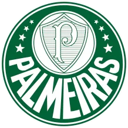
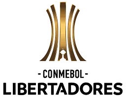
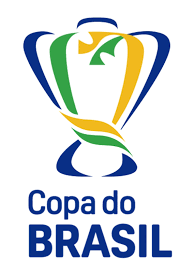
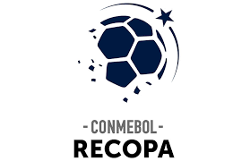
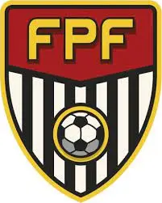
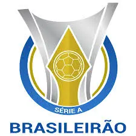
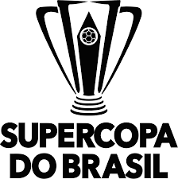
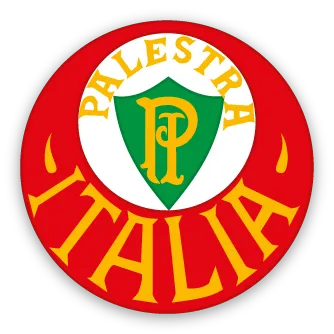
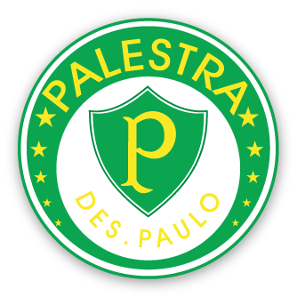
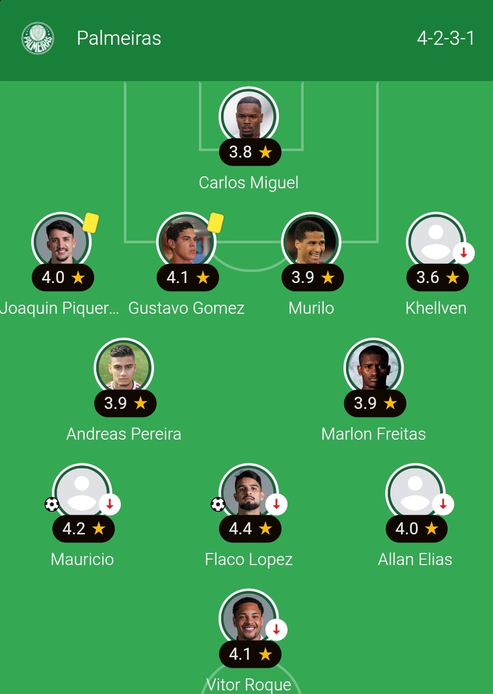

Sociedade Esportiva Palmeiras

Sociedade Esportiva Palmeiras, conhecida popularmente como Palmeiras e cujo acrônimo é SEP, é um clube poliesportivo brasileiro da cidade de São Paulo, capital do estado homônimo. Foi fundado em 26 de agosto de 1914 e suas cores, presentes no escudo e bandeira oficial, são o verde e branco.
- Presidente: Leila Pereira
- Idade: 111 anos
- Estádio: Allianz Parque
- Mascotes: Periquito e Porco
História
No início do século 20, jovens imigrantes italianos em São Paulo decidiram criar um clube de futebol que representasse toda a colônia italiana diante das equipes da elite paulistana. Em 26 de agosto de 1914, 46 fundadores liderados por Luigi Marzo e Luigi Cervo criaram o Palestra Itália. Após algumas dificuldades iniciais, o novo time disputou sua primeira partida em Votorantim, vencendo o Savóia por 2 a 0 e conquistando a Taça Savóia. Em 1916, o clube se filiou à principal liga esportiva da cidade e passou a disputar jogos oficiais.
Durante a Segunda Guerra Mundial, em 1942, um decreto do presidente Getúlio Vargas proibiu entidades brasileiras de usarem nomes ligados aos países do Eixo. O Palestra Itália foi pressionado a mudar de nome e, após uma tentativa provisória, adotou definitivamente Sociedade Esportiva Palmeiras, nome que permanece até os dias atuais. Logo em sua primeira decisão com o novo nome, o clube venceu o São Paulo Futebol Clube em uma partida histórica, consolidando sua nova identidade no futebol brasileiro.
Títulos
Atualmente o Palmeiras é um dos clubes mais tradicionais do Brasil e conta com muitos títulos, sendo eles: 3 Libertadores, 12 Brasileirões, 1 Copa Mercosul, 1 Recopa Sul-Americana, 4 Copas do Brasil, 1 Supercopa do Brasil, 1 Copa dos Campeões, 5 Torneios Rio-São Paulo e 28 Paulistões. O atual treinador Abel Ferreira já é o treinador com mais títulos conquistados pelo Palmeiras ao lado de Oswaldo Brandão, com 10 conquistas cada.
Títulos conquistados na era Abel Ferreira
| Título | Logo | Ano | Final | Placar |
| Libertadores |  |
2020 | Palmeiras x Santos | 1x0 |
| Copa do Brasil |  |
2021 | Palmeiras x Grêmio | 3x0 |
| Libertadores | 2021 | Palmeiras x Flamengo | 2x1 | |
| Recopa |  |
2022 | Palmeiras x Athletico-PR | 4x2 |
| Paulistão |  |
2022 | Palmeiras x São Paulo | 5x3 |
| Brasileirão |  |
2022 | - | - |
| Supercopa |  |
2023 | Palmeiras x Flamengo | 4x3 |
| Paulistão | 2023 | Palmeiras x Água Santa | 5x2 | |
| Brasileirão | 2023 | - | - | |
| Paulistão | 2024 | Palmeiras x Santos | 2x1 |
Hino
Quando surge o Alviverde imponente
No gramado em que a luta o aguarda
Sabe bem o que vem pela frente
Que a dureza do prélio não tarda
E o Palmeiras no ardor da partida
Transformando a lealdade em padrão
Sabe sempre levar de vencida
E mostrar que de fato é campeão
Defesa que ninguém passa
Linha atacante de raça
Torcida que canta e vibra (2x)
Por nosso Alviverde inteiro
Que sabe ser brasileiro
Ostentando a sua fibra
Escudos

Palestra Italia - 1914
Elaborado nos primeiros anos de vida do clube, era o símbolo institucional utilizado em impressos, carteiras sociais e na bandeira oficial. Na circunferên cia menor, de fundo branco, havia o contorno da Cruz de Savoia preenchido na cor verde com o “P” e o “I” arcaicos inseridos no meio, em amarelo. Acima, a inscrição “Palestra” em amarelo. Na circunferência maior, de fundo vermelho, a inscrição “Italia”, em amarelo.

Palestra de São Paulo - 1942
Símbolo provisório utilizado no período da mudança de nome. O centro da circunferência menor foi descolocado para baixo, com o contorno da Cruz de Savoia preenchido de verde com o “P” inserido em amarelo e, fora do contorno, a inscrição “De S. Paulo” também em amarelo. Na circunferência maior, de fundo verde, havia estrelas em amarelo e a inscrição “Palestra” também em amarelo.
Palmeiras - 1942
É o atual símbolo institucional e de camisa do clube. Na circunferência menor, de fundo branco, reapareceu o contorno da Cruz de Savoia, preenchido por 26 linhas alusivas ao dia de fundação do clube e com o tradicional “P” inserido no meio. Na circunferência maior, de fundo verde, apareceu a inscrição “Palmeiras” em branco e, também em branco, oito estrelas, que fazem referência ao mês de fundação do Palestra.
Atualmente
Atualmente, a Sociedade Esportiva Palmeiras vive uma das fases mais vitoriosas de sua história recente. O clube se mantém entre as principais forças do futebol brasileiro e sul-americano, com elenco competitivo, gestão financeira sólida e grande presença de sua torcida. Sob o comando de comissões técnicas modernas, o Verdão segue disputando títulos importantes em todas as competições que participa.
Até o dia 02/03/2026, o Palmeiras se encontra em 1º lugar no Brasileirão com 10 pontos, junto do São Paulo, mas fica a frente pelo saldo de gols. Palmeiras também está classificado para a final do Paulistão, após derrotar o São Paulo por 2x1, que ocorrerá nesta quarta-feira (04) e domingo (8), jogos de ida e volta. Também está classificado para a fase de grupos da Libertadores e para a 5º fase da Copa do Brasil.
A escalação atual do Palmeiras é um 4-2-3-1 mostrado abaixo, mas deve mudar com a chegada de Jhon Arias, que está entrando no 2º tempo em todos os jogos desde sua chegada.
